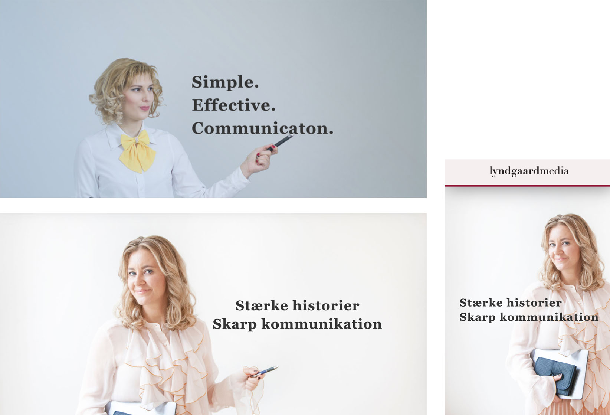

Business Case
Lyndgaard Media is a Copenhagen based, one woman company. The founder was starting out on her own after years of a successful career in tv and print journalism.
The Challenge
Having an out of date 2 screen business card like website, an entire redesign was needed.
It should showcase her previous work, as well as explain what she could do – outside of the work she ad already done.
The goal was to both get new clients, and keep existing ones.
Project Scope & Objectives
There needed to be a website designed, coded and uploaded.
It was imperative to work on all screen types.
There was already a logo that the new site would use.
The Process
Design research for colors, photography, typography and overall feel for the design.
Wireframe created to visualize the foundation of the site, and then used to write
the copy for the site.
Upon acceptance of the wireframe, the design was created directly with code – making it easy to see how the site was working on different screens in real time.
This made it quick to try different fonts and colors globaly on the site by changing a few lines of code.

ABOVE: During research for imagery of the site, I found the top stock photo during research. It was used it as inspiration for the final image, and art directing the photographer. It was important
that her clothes were lite colored so the words would be readable also when they were on top of the owner on mobile screens.
Rational for Design Solutions
Colors
Were kept subdued and classic.
Design wise, Stine had a really nice logo in the font Didot which would be used, so I needed to
choose fonts that would pair well with it. The fonts to be used, needed to be free.
Typography Decisions
The font Georgia is able to be usde for free, and it worked well with the pre-existing logo (in the font Didot). It was paired with a simple sans serif, Open Sans.
Photography
Having found the sample image and written a sample text, was able to art direct photographer, and the client so that the headline would read also
as it moved during different scree orientations. This included making sure her wardrobe and the background were light colored. (see image)
Images Screen grab from a television newscast + logos well known companies to add immediate credibility.